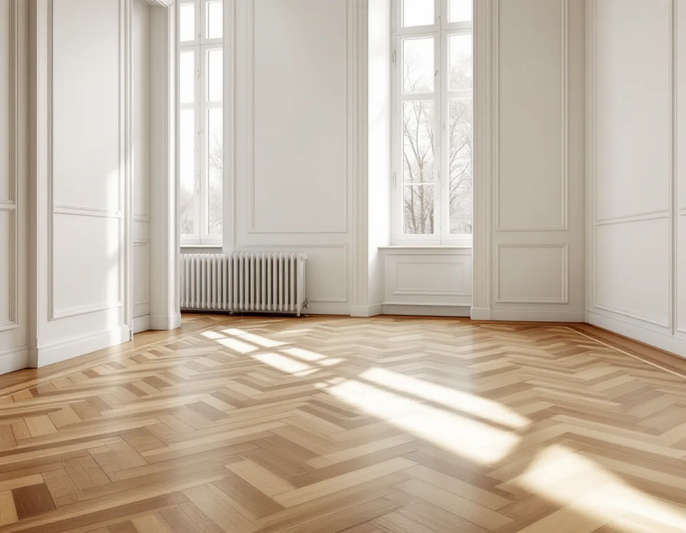
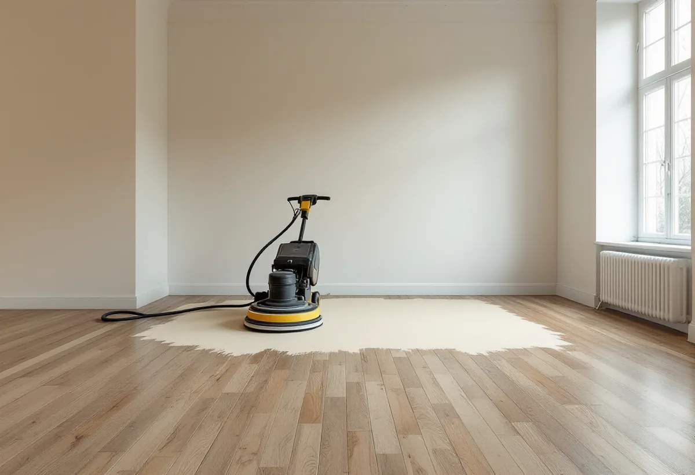
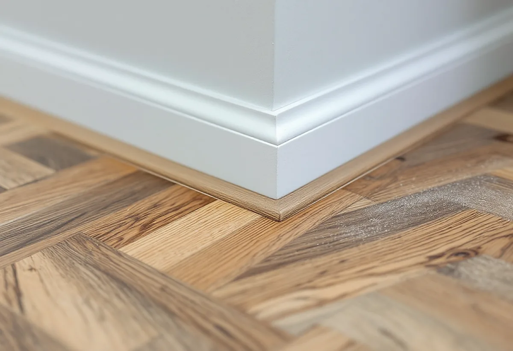

Platsbesök
Vi ser på mönstret, slitskiktet och tidigare slipningar.
I stenstadens lägenheter i Vasastan ligger ofta stav- eller fiskbensparkett som har slipats förut. Frågan är därför inte bara hur golvet ska se ut, utan hur mycket trä som finns kvar att slipa. Geal Entreprenad AB slipar och ytbehandlar parkett i Vasastan och kontrollerar slitskiktet innan arbetet börjar.

Stadens områdesfakta för 2025 räknar 8 532 lägenheter i flerbostadshus i Gustav Vasa församling. 1 467 av dem är ettor, 2 328 tvåor, 1 955 treor och 1 673 har fyra rum eller fler. I Västra Matteus finns 11 913 lägenheter i flerbostadshus, och 8 990 av församlingens bostäder är bostadsrätter. Det är alltså oftast du själv som beställer golvslipningen, men inom ramen för föreningens stadgar. Läs dem innan du bokar, så att du vet vad föreningen säger om golv, buller och arbetstider.
Vasastan hör till den klassiska stenstaden, som översiktsplanens riksintressedel beskriver som tät kvartersstad med bebyggelse från 1870 till 1930. Parketten har en egen historia under samma tid. Enligt Nordiska museet, i Byggnadsvårdsföreningens Materialhörnan, fick stavparketten sitt stora genombrott under 1900-talet, och på 1920-talet började man klistra fast specialhyvlade parkettstavar med asfalt direkt på betong.

Golvbranschens riktlinjer SLIP 22 säger att golvet ska inspekteras före slipningen. Laminat, golv med ett slitskikt tunnare än en millimeter och vissa fabrikslackerade golv går inte att slipa, och är man osäker kan man kontrollera med en kniv i en springa i ett hörn av rummet. Har slitskiktet lossnat på något ställe ska det limmas ner först.
Byggnadsvårdsföreningen skriver i ett svar att en slipning med golvslipmaskin tar bort ungefär en halv till en millimeter av parketten, så djupare märken än så kan synas även efteråt. En lamellparkett brukar enligt samma svar kunna slipas två till fyra gånger. I en äldre lägenhet där golvet slipats flera gånger förut är det därför värt att titta noga innan maskinen kopplas in.
Enligt riktlinjerna ska rutmönster, fiskben och andra mönster där träet ligger åt olika håll normalt slipas först diagonalt och sedan i rummets längdriktning, eller från det håll ljuset kommer. Grovslipningen görs normalt med korn 36–50, mellanslipningen med korn 60–80, och slutresultatet ska motsvara korn 120 för lövträ som ek. Efter färdigslipningen får det inte finnas slipränder kvar, och det är extra viktigt om golvet ska pigmenteras.
Kanterna slipas med en något grövre kornstorlek än resten av golvet, och hörn som sicklas putsas med samma papper som den sista slipningen, så att strukturen blir densamma överallt. Vill du byta golv i ett rum i stället för att slipa finns mer under golvläggare i Vasastan.
SLIP 22 anger att slipdamm från bland annat ek och bok är cancerframkallande, och att slipning bör göras med en partikelseparator eller cyklondammsugare med HEPA-filter och med andningsskydd av klass P3. Slipdamm som blandats med lack eller oljerester kan självantända, så dammpåsen ska tömmas och förvaras utomhus eller på en brandsäker plats.
I ett flerbostadshus påverkar det också trapphuset. Vi täcker dörrar och ventiler, bär ut dammet i slutna säckar och berättar för dig när det blir ljud, så att du kan informera grannarna. Golvet ska enligt riktlinjerna inte ytbehandlas när luftfuktigheten inomhus ligger utanför 30–60 procent eller fuktkvoten i trät utanför 6–10 procent. Läs mer om tjänsten under golvläggning.

Vi ser på mönstret, slitskiktet och tidigare slipningar.
Slipning, lagning och ytbehandling var för sig.
Möbler ut, lister lossas och trapphuset skyddas.
Diagonalt först i mönstret, sedan i längdriktningen.
Lack, olja eller såpa när fuktvärdena är rätt.
Skötselråd för golvet de första veckorna.
Skatteverket räknar slipning av golv som rotarbete även i en bostadsrätt, när arbetet görs innanför lägenhetens väggar, tak och golv och du har underhållsansvaret enligt föreningens stadgar.
Avdraget är högst 30 procent av arbetskostnaden, som mest 50 000 kronor per person och år, och rot och rut får tillsammans vara högst 75 000 kronor. Material och resor ger inget avdrag. Geal drar avdraget direkt på fakturan.
Golvytan, mönstret, hur många gånger golvet slipats förut, lagning av lösa stavar, vilken ytbehandling du väljer och hur dammet kan bäras ut. Efter ett gratis platsbesök får du ett skriftligt kostnadsförslag.
Parkett, trägolv, klinker och slipning.
Golvläggning i Stockholm →Takbyte, takbesiktning och plåtarbeten.
Takläggare i Vasastan →Stenstad, Röda Bergen och föreningarnas tak.
Takrenovering i Vasastan →Flytta badrummet, ny stam och frånluft.
Badrumsrenovering i Vasastan →När en lokal blir bostad.
Byggföretag i Vasastan →Ställning, tillstånd och etablering på gatan.
Fasadrenovering i Vasastan →Storgårdskvarteren och 20-talets fönster.
Fönsterbyte i Vasastan →Fönster i Birkastadens jugendhus.
Fönsterrenovering i Vasastan →Springor, kupning och underhåll.
Golvläggare i Vasastan →Kokvrån som blir kök.
Köksrenovering i Vasastan →Snickerier, fönster och sprucket spackel.
Målare i Vasastan →Takfönster, vindar och plåt.
Plåtslagare i Vasastan →Öppna upp, nya dörröppningar och listverk.
Snickare i Vasastan →Ny tapet på gamla putsväggar.
Tapetsering i Vasastan →Hela lägenheten, med husets värden kvar.
Totalrenovering i Vasastan →